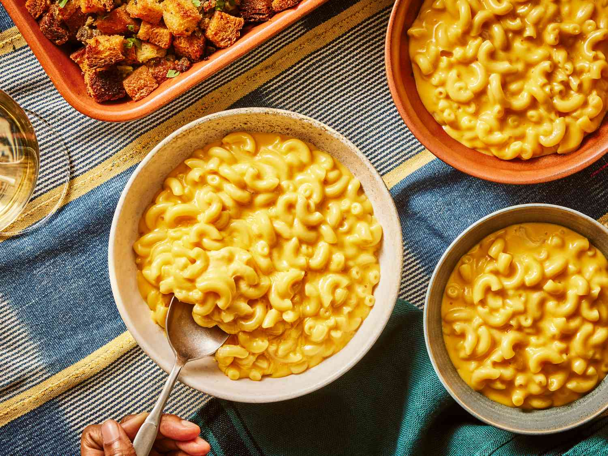

The Food Lab's Ultra-Gooey Stovetop Mac and Cheese Recipe

Description
Here's a homemade stovetop mac and cheese recipe that's only about 10 percent
more cumbersome to make than the blue box and tastes far, far better.
Ingredients
- 1 pound elbow macaroni
- Kosher salt
- One 12-ounce can evaporated milk
- 2 large eggs
- 1 teaspoon Frank’s RedHot or other hot sauce
- 1 teaspoon ground mustard
- 1 pound extra-sharp cheddar, grated
- 8 ounces American cheese, cut into 1/2-inch cubes
- 1 tablespoon cornstarch
- 8 tablespoons (1 stick) unsalted butter, cut into 4 chunks
Steps
- Place the macaroni in a large saucepan and cover it with salted
water by 2 inches. Bring to a boil over high heat, stirring occasionally
to keep the pasta from sticking. Cover the pan, remove from the heat,
and let stand until the pasta is barely al dente, about 8 minutes.
- Meanwhile, whisk together the evaporated milk, eggs, hot sauce, and
mustard in a bowl until homogeneous. Toss the cheeses with the cornstarch
in a large bowl until thoroughly combined.
- When the pasta is cooked, drain it and return it to the saucepan.
Place over low heat, add the butter, and stir until melted.
Add the milk mixture and cheese mixture and cook, stirring constantly,
until the cheese is completely melted and the mixture is hot and creamy.
Season to taste with salt and more hot sauce. Serve immediately, topping
with toasted bread crumbs if desired.